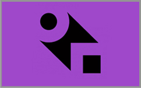

[강연] 간송미술관 탁현규가 이야기하는 사임당
꽃밭에 핀 꽃들을 찬찬히 바라보듯, 사임당 그림의 아름다움을 음미하는 시간에
여러분을 초대합니다.
서울: 4월 7일 저녁7시 무계원 사랑채 종로구 창의문로 4가길
경기: 4월14일 저녁 7시30분 교하도서관 파주시 숲속노을로 256
부산: 5월13일 오후2시 신세계백화점 센텀시티점 부산 해운대구 센텀남대...

[서울 속 건축]에 적힌 잘못된 사실을 바로 잡습니다.
한국어판 「서울 속 건축」에 오류가 있어 바로잡습니다.
판권면의 영문판 출판연도를 ‘2012년’에서 ‘2014년’으로,
163쪽과 264쪽의 서울역사 설계사를 ‘혜원까치종합건축사무소’에서 ‘아키플랜
종합건축사무소’로 정정합니다.
독자 여러분께 진심으로 사과의 말씀전하며, 안그라픽스에서는 지속적으로...
[파주북소리] 일일책공방 참가자 모집
가죽커버로 된 나만의 책 만들기 「BOOK TOOLS」 김진섭작가와 함께 가죽커버
에 금박작업, 로고박기, 가죽끈꿰기 등 책이 완성되는 전과정을 페험하는 일일책
공방에 초대합니다.
(선착순 30명 초등생이상 참여가능)
일시: 2017년 10월 3일 월요일 오후2시 체험비: 20,000원 (재료비포함)
[강연] 안목3: 컬러링 클래스
소녀시대 태연도 추천하는 컬러링북 [HERS 그녀]와 함께 크리에이티브테라피
할까요?
패션디자이너,SUWA작가와 함께하는 컬러링 클래스!
일시: 2017년 4월 9일 7시 30분 장소: 마이크림택트 스퀘어 (종각역 도보 1분)
크리에이티브 컬러링킷 제공 (1인당 재료비 1만원)
[강연] 안목8: 시작, 포트폴리오 촬영 포트폴리오, 이제 촬영까지 직접하라
일시: 2017년 12월 3일 오후 7시
장소: 홍대 상상마당 4층 (30명 선착순마감)
참가비: 10,000원(olny 강연) | 30,000원 (신간+강연)